大窪寺/広島県
広島県のとある島に素敵な大仏がある、というウワサを以前から薄々聞いていた。
…とはいうものの、実際には詳細不明。
そのわりに「行ってみたらスカでしたー」とおどけるのにも躊躇するレベルの僻地（失礼！）だったりする。
ハッキリ言ってこれで何もなければシャレにならない程、行きにくい場所だが、そういうところに敢えて行くのが「冒険」というヤツなのではないだろうか。
誰に頼まれるでもなく、褒められもせず、感謝もされず、たまにはお寺の人に怒られ、おいしいネタだけ人様にいただかれ…、それでも詳細不明の与太話を確認しに現地に飛び込む時のワクワク感ドキドキ感は何ものにも代えがたい興奮を私に与えてくれるのだ。
俺が行かなきゃ誰も行かないでしょ、的な自負もありますし。
というわけでセルフ冒険のはじまりはじまり〜。
向かう先は広島県江田島市。
江田島といえば大抵の方は海軍兵学校を思い浮かべられることであろう。
もちろん私もこの島に行くまでは兵学校と「男塾塾長江田島平八である！」以外のワードは浮かばなかった。
が、実際に行ってみるとこの江田島市というのは複雑なカタチをしている。島は大雑把に言えばY字型になっている。
そのY字の右上部分だけが江田島と呼ばれており、左上が西能美島、そしてY字の下の部分が東能美島と呼ばれているのだ（2004年に3島にある4つの町が合併して市になった）。
ひとつの島なのに3つの呼称のある島、というのも不思議だが、さらにこの島へのアプローチも複雑だ。
いわゆる兵学校のあった江田島に行くのには広島港から船で行くのが一般的なのだろうが、東能美島などは呉市から倉橋島という島を経由して陸路で行く方が利便性が高い。
…ね。ややこしいでしょ。
というわけで向かったのはY字型の下の部分、東能美島。
呉市内でレンタカーを借りていざ冒険、冒険。
呉と倉橋島の狭い海峡を渡る音戸大橋は日本初のループ橋だ。
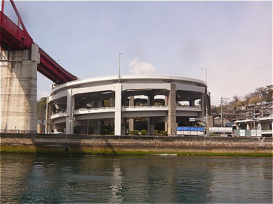
私が説明するよりも姉妹サイトである日本すきま漫遊記の音戸大橋の訪問記を御覧いただいたほうがはるかに判りやすいし、その魅力が伝わるであろう。
音戸大橋の隣にはもう一本新しい橋を建設している。
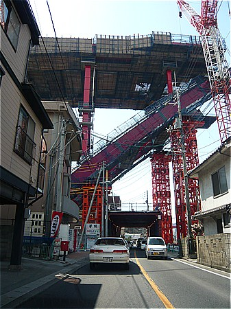
静かな海沿いの街に突然現れるメガストラクチャー。まるでSF映画をみているような気分だった。
さて。
そんなこんなで東能美島にやってきた。
冒険！などといきがってみたものの、実際に訪れてみるとメチャメチャ長閑な海沿いの街だった。これじゃあ冒険というよりはいい旅夢気分みたいだよ…。
全ての人が昼寝してるんじゃねえか、と思えるほど静かな静かな集落の中に突如大仏さんが現れる。
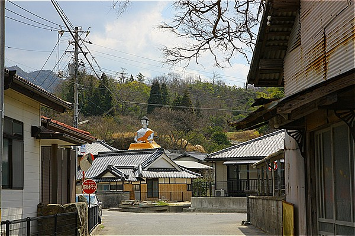
おおお！お寺の本堂の屋上に素敵な素敵な大仏さんが！ウワサは本当だったんだあ！！
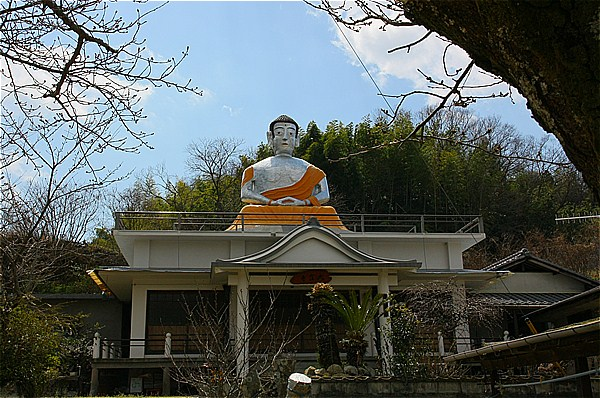
如何であろうこの雄姿。
肌の色は銀色、衣はオレンジ。そして何といってもこの素敵な御尊顔ったら！
本邦最強との呼び声も高い布袋大仏にも勝るとも劣らないそのお顔のインパクト。
あまりの素晴らしさに脳内から分泌されたナゾの物質が耳や鼻の穴からドロドロドロ…
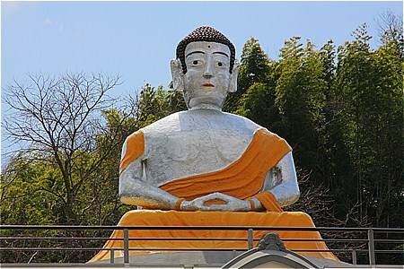
青い空をバックにそびえる巨体は何となくウルトラマンを彷彿とさせる…いや、そうじゃないなあ。何だろうこの感じ。
どっちかというと少し時代が下った頃の若干劣化しかかったヒーローもの。スペクトルマンとかミラーマン的な…
わかった！トリプルファイターだ！（この辺がツボのおっさん以外は全員スルーしていただいて結構です）
かなりパンチ効いてる大仏さん。
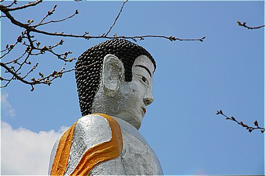
タイの田舎あたりにありそうな感じがイイ。凄くイイ。
本堂の後ろに回ってみる。
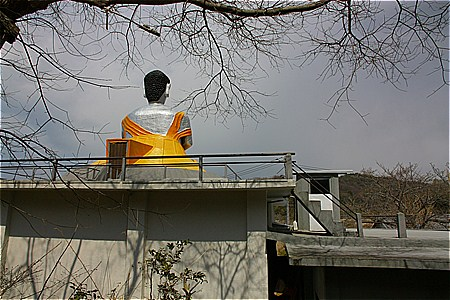
大仏さんがおわす本堂の屋上へ行くには本堂の脇にある小さな建物の屋上を経由して行くようになっているようだ。むむむ、これは複雑そう。
しかもお尻の辺りからボコッと四角い何かが飛び出している。
そっか、あそこから胎内に入れるのか。カッチョ良すぎるじゃないか。
…というわけでお寺に声をかけてみる。
対応してくれたのはお寺のおばあちゃん。大仏を案内してくれるという。
ありがたや、ありがたや。というわけでおばあちゃんに付いて行く。
大仏の下にあるコンクリート造の本堂の中には入らず、一旦本堂の縁側から隣の建物に移動する。
その建物には狭く急な階段がある。馴れているおばあちゃんはひょいひょい昇るがこれが結構大変。まるで忍者屋敷のようだ。
↓コレが階段を昇りきったところ。
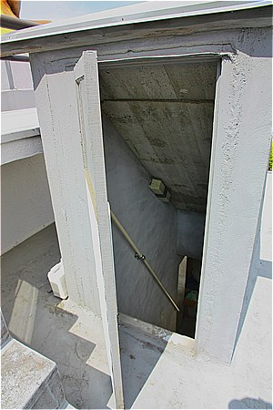
で階段を昇りきると建物の屋上に出る。
そこから本堂の屋上に移動すると…いらっしゃいました。大仏さん。
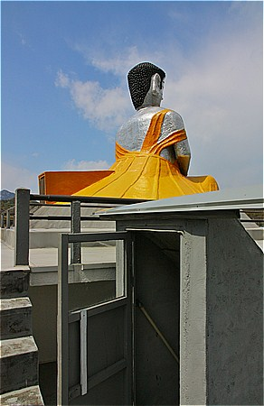
大仏さんのお尻から飛び出した扉。これまで色々な大仏を見てきたが、ここまで唐突＆強引な入り口は見たことがない。
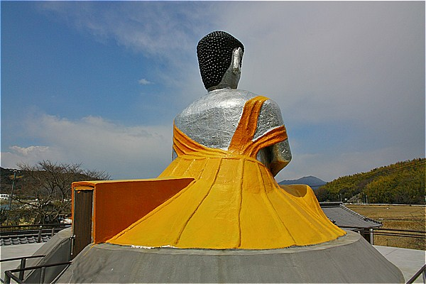
おばあちゃんに扉を開けてもらう。
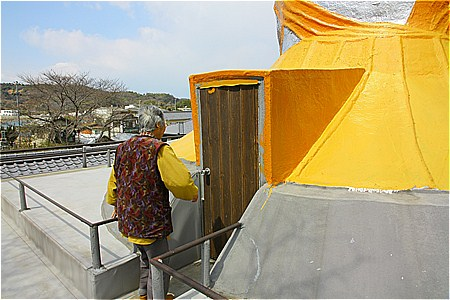
で、内部。
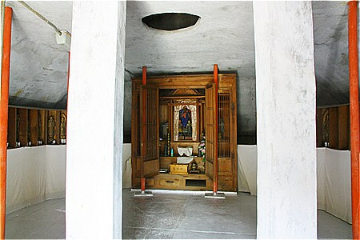
シンプルな胎内空間だが、このサイズの大仏さんで中に入れること自体うれしいじゃないか。
胎内空間は丁度フレアスカートのようになっている衣の部分。
見上げると胴体の部分が板で塞いであった。
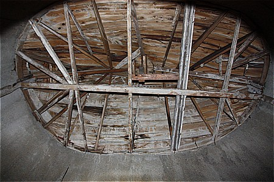
左右の壁には三十三観音と思しき仏像があった。
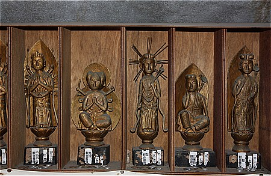
おばあちゃんのハナシによるとこの仏像を作ったのは亡くなった先代の住職だという。
ちなみに大仏も住職と檀家さんが力を合わせて作ったのだという。
本堂の落慶が昭和41年。大仏さんもほぼ同時期につくられたという。
なるほど大仏さんも胎内の観音像も表情が良く似ている。
一旦外に出て間近で大仏さんを拝見する。
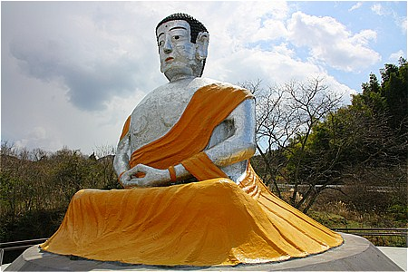
近年塗りなおしたそうで、ついでに屋上の床の部分の防水工事もしたそうだ。
海が近いためコンクリートの痛みも早いだろうが、これでしばらく安泰だろう。
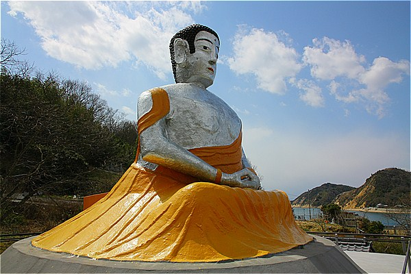
何とも愛嬌のあるお顔だなあ。
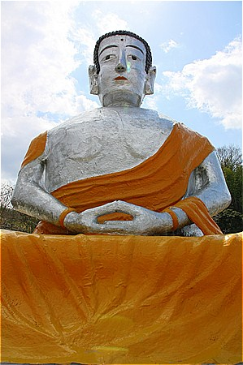
町中全てが眠っているような昼下がり、もしかしたらこの大仏さんが催眠光線を発射しているのかもしれない。
本堂に戻ってご本尊にご挨拶。
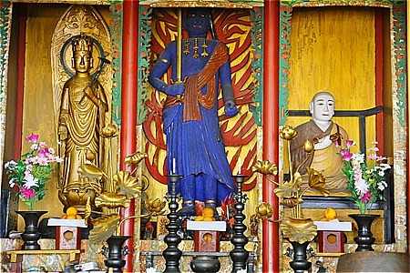
これまた先代住職の手による特徴ありすぎる仏像が安置されている。
見上げればその先代住職の写真が飾ってあった。
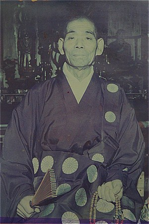
その顔をみて納得。
先の大仏も本堂の仏像もみ〜んな笑っちゃうほど先代住職にそっくりではないか！
垂れた眉毛、高い頬骨、尖った頭、立派な鼻、そしてビックリするほど大きな耳！
先代住職、まさに自分をモデルに大仏を建立したのだろう。
この町の人は住職がなくなってもいつでも銀色の住職がいるように思えてならないだろう。
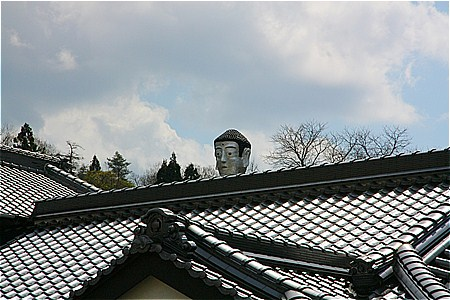
振り返れば屋根の上から住職、もとい大仏さんが見送ってくれていた。
2011.03.
珍寺大道場 HOME